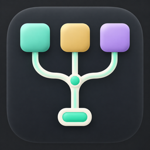

CODEX AUTOMÁTICO · DIRECCIÓN VISUALTu actividad, de un vistazo.
Un monitor discreto que puedes desplegar cuando necesitas saber más.
Una presencia pequeña. El detalle, a un clic.
Modelo y actividad siempre a mano; se recoge para dejarte trabajar.
ESPACIO DE TRABAJO SIMULADO
Codex automático3 tareas activas · ejemplo
TAREA DESTACADA
Rediseño de la interfaz
GPT-6 AstraMuy alto
Aceptado por Codex
Diseño visual y experiencia de usuario: priorizamos capacidad para entender y mejorar la interfaz.
EN PARALELO
Revisión de cambiosTrabajando
SolAlto
Ajustes del formularioEsperando tu respuesta
TerraMedio
ACTIVIDAD RECIENTE
Traducción completada · Luna / Ligero
Propuesta visual interactiva. Abrir, recoger, fijar, pausar y mostrar el motivo solo cambian este ejemplo. No controla el monitor instalado.